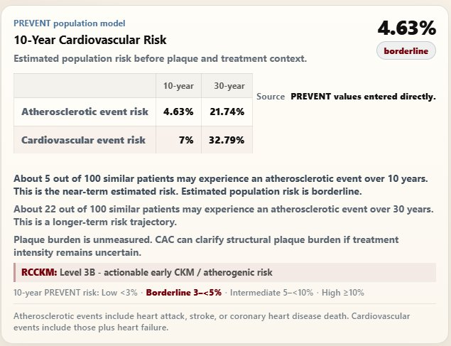
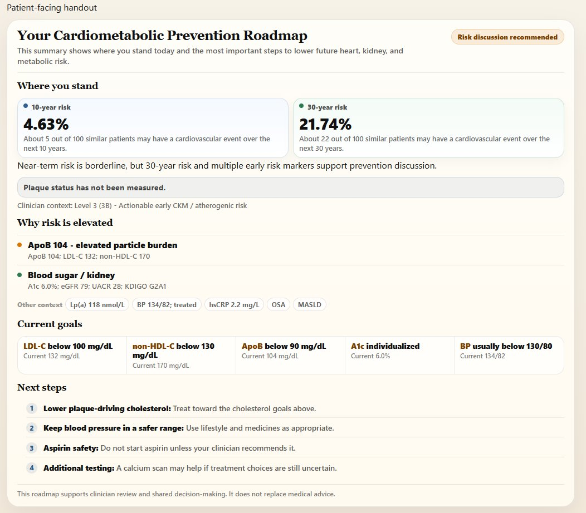
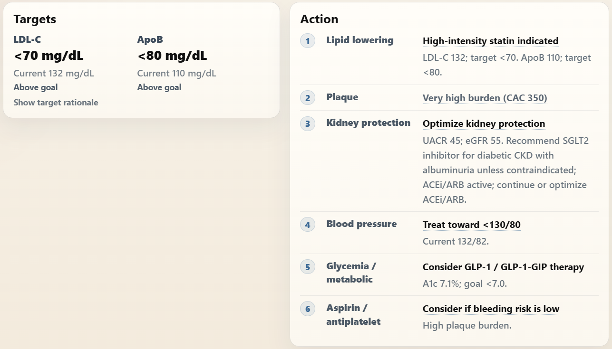
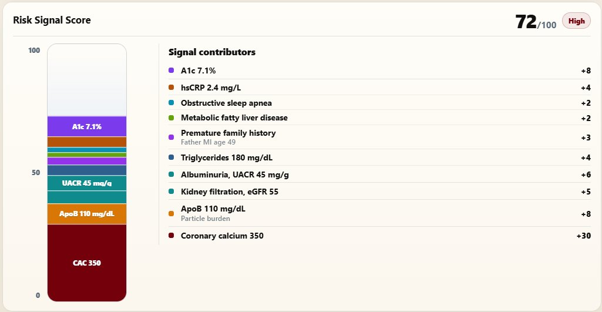

Risk Continuum helps them tell it.
Drop in the labs, meds, and history. In seconds: a high yield report showing risk level, the drivers behind it, targets, ICD codes, a copy-paste report, and patient roadmap, along with an AI Clinical Pearl.
Try it Out, 30 + demos, smartphrase template available, EMR agnostic
Level 1–5 placement, with the named driver pattern (e.g. "Level 3B · early CKM / atherogenic").
Current AHA equations, both horizons. Banded Low / Borderline / Intermediate / High.
A 0–100 score that names the actual contributors — ApoB, family hx, hsCRP, A1c — with weights.
Diagnoses derived from the data (E78.89, E11.9, N18.x…) plus per-domain targets ready to discuss.
Copy-paste structured report for the chart, and an Independent AI review with Clinical Pearl.
Pick a representative patient. The marker slides to their position on the risk continuum and a structured report appears inline — the same shape of output RCCKM produces from your real inputs. Representative examples shown for demonstration.
ApoB, Lp(a), a missing UACR, eGFR, CAC score, A1c, BP, medications — the most important cardiometabolic data points are spread across the record, or may not have been checked. Clinicians have had to process all that information quickly, while simultaneously handling all the other aspects of a visit...until now. RCCKM does that assembly for you.
From fragmented chart data to structured CKM interpretation.
Labs, imaging, medications, and risk markers from across the record go in. The cardiometabolic story they tell together comes out — surfaced, structured, and ready to review.
CKM stage, kidney risk, ASCVD risk, drivers, treatment considerations, and a copy-ready EMR report — all derived from the data you already have.
Expert Commentary delivers an independent Agree / Disagree verdict citing this patient's actual numbers. Not to replace your judgment. To pressure-test it.
Less chart assembly. More clinical time.
Surface the cardiovascular, kidney, and metabolic risk signals buried in the chart.
From fragmented data to structured interpretation.
Turn siloed labs, imaging, medications, and risk markers into structured CKM interpretation. Expert Commentary included. The visit stays about the patient.
Built for the pace of a real clinical day.
Every patient is placed on a continuum from minimal signal to very high risk. Direction and urgency emerge from the data already in the chart.
A borderline 10-year number looks very different alongside a 21% 30-year trajectory. Both are shown. The conversation changes.

The patient roadmap is plain-language output your patient takes home. Risk in plain numbers, why it is elevated, what the goals are, what happens next.

LDL-C, non-HDL-C, and ApoB targets sit alongside numbered actions in plain clinical language. The clinician walks out knowing exactly what to do.

Risk Signal Score is evidence-informed and clinically calibrated. Markers that directly show disease burden or strongly change management — CAC/plaque, ASCVD, CKD with albuminuria, diabetes, ApoB, LDL-C, and Lp(a) — receive higher weights. Broader risk enhancers such as OSA, obesity, and family history receive lower weights because they add context but are less specific.

Your structured report, ready to paste. A plain-language summary your patient takes home. One analysis covers both.
Better clarity, better decisions.
Risk level, staging, targets, ICD codes, and numbered actions. Structured, ready, and waiting. Walk in knowing. Walk out documented.
A plain-language prevention roadmap they take home. Drivers named clearly. Goals shown alongside current values. Next steps numbered and actionable.
When patients understand their own risk story, the conversation changes. Shared decision making becomes real, not just a checkbox.
"I wanted a way to figure out patients' cardiovascular risk quickly: and catch the signals to alter course well before events, using the routine data we already have or can easily get."
Cardiometabolic risk touches every specialty. RCCKM works wherever you do.
Structured CKM interpretation for complex multi-morbidity patients. Know which intervention to prioritize and why.
Manage CKM risk longitudinally across your panel. Stay ahead of every patient's trajectory at every visit.
Quantify upstream metabolic, renal, lipid, and plaque contributors driving downstream cardiovascular outcomes.
Kidney function, albuminuria, cardiovascular risk, and treatment implications in one CKM-aware frame.
Diabetes and metabolic disease managed with cardiovascular and kidney trajectory visible in real time.
Built for clinicians with the greatest power to change what happens next, before disease is established.
Basic data in, consistent, guideline-aligned recommendations out, with just a few clicks.
Copy and paste de-identified data from your note into the provided template, or key it in directly. The hardwired parser catches most common formats — no AI, no PHI leaves your browser.
Risk level, PREVENT score, CKM staging, treatment targets, ICD codes, and numbered recommendations — all in seconds.
AI Insight with Expert Commentary adds context and perspective to every case, right when you need it most.
Your report is ready to paste. Your patient has a plain-language summary to take home. Both done before they leave the room.
Routine visit. You hunt for the relevant labs — albuminuria, Lp(a), eGFR trends — check what might have been missed, recheck family history, calculate risk scores and kidney stage, remember which cutoffs apply to this patient, then try to assemble it all into something you can explain. RCCKM curates that work for you: every signal surfaced, visualized, and ready to discuss.
Synthetic patient · representative example · no PHI ever enters RCCKM.
Every patient carries a risk story.
Risk Continuum helps them tell it.
RCCKM was created by a practicing physician after years of caring for patients across primary care, hospital medicine, and population health.
RCCKM was designed to bring the data points together into a clear, actionable picture of risk and opportunity, helping clinicians quickly identify what matters most and where intervention may have the greatest impact.
Because behind every risk score is a person, a family, and moments that still lie ahead.
Our goal is simple:
Better prevention.
Clearer decisions.
More time for the moments that matter.
More birthdays. More weddings. More graduations.
Structured risk interpretation for every visit.
Fake patient · real output · hover to inspect
Representative examples shown for demonstration. Synthetic patient · not real PHI.